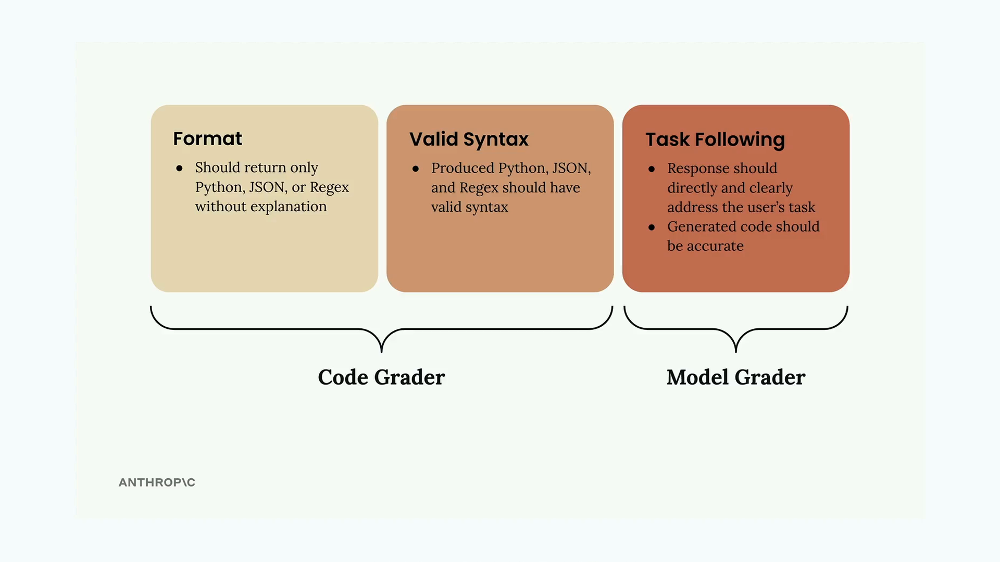
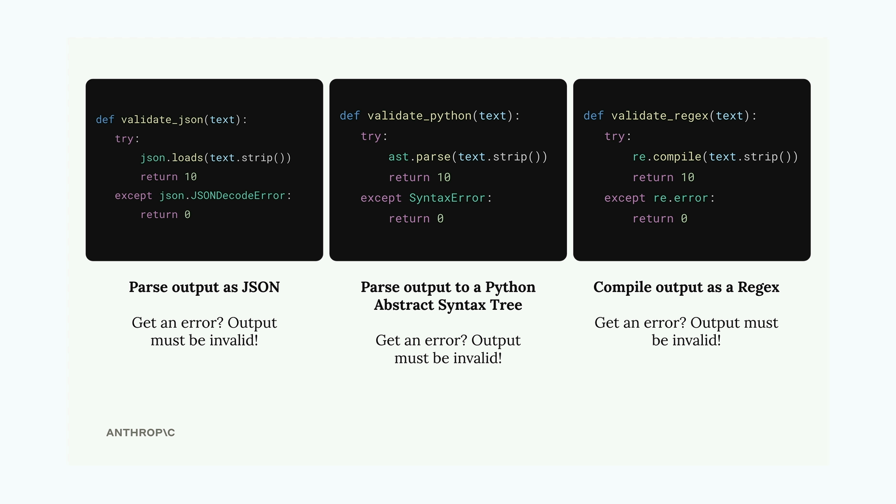

코드 기반 채점
코드를 생성하는 AI 모델을 평가할 때는 응답이 의미 있는지 확인하는 것만으로는 부족합니다. 생성된 코드가 실제로 유효한 문법을 갖추고 올바른 형식을 따르는지도 검증해야 합니다. 이것이 바로 코드 기반 채점이 필요한 이유입니다.
코드 채점 작동 방식
코드 채점은 AI 생성 응답의 두 가지 핵심 측면을 검증합니다:

- 형식 - 응답은 설명 없이 요청된 코드 유형(Python, JSON, 또는 Regex)만 반환해야 합니다
- 유효한 문법 - 생성된 코드가 의도한 언어로 실제로 올바르게 파싱되어야 합니다
- 지시 따르기 - 응답이 요청된 내용을 직접 다루고 정확해야 합니다
처음 두 가지 기준은 코드 채점기가 처리하고, 지시 따르기는 모델 채점기가 평가합니다. 이 둘이 함께 작동하여 종합적인 평가를 제공합니다.
문법 검증 함수
생성된 코드의 문법이 유효한지 확인하기 위해, 출력을 파싱하려는 세 가지 헬퍼 함수를 만들 수 있습니다:

def validate_json(text):
try:
json.loads(text.strip())
return 10
except json.JSONDecodeError:
return 0
def validate_python(text):
try:
ast.parse(text.strip())
return 10
except SyntaxError:
return 0
def validate_regex(text):
try:
re.compile(text.strip())
return 10
except re.error:
return 0각 함수는 텍스트를 해당 형식으로 파싱하려고 시도합니다. 파싱이 성공하면 만점인 10을 반환하고, 오류로 실패하면 문법이 유효하지 않은 것으로 0을 반환합니다.
데이터셋 형식 요구사항
코드 채점기가 어떤 검증기를 사용할지 알 수 있도록, 테스트 케이스에 예상 출력 형식을 명시해야 합니다:
{
"task": "Create a Python function to validate an AWS IAM username",
"format": "python"
}데이터셋 생성 프롬프트를 업데이트하여 예시 출력 구조에 이 형식 필드를 추가함으로써 자동으로 포함되도록 할 수 있습니다.
프롬프트 명확성 개선
AI 모델에서 더 나은 결과를 얻으려면, 예상 출력 형식에 대해 프롬프트 지시사항을 더 구체적으로 작성하세요:
* Respond only with Python, JSON, or a plain Regex
* Do not add any comments or commentary or explanation또한 코드 블록이 있는 미리 채워진 어시스턴트 메시지를 사용하여 모델이 원시 코드만 반환하도록 유도할 수 있습니다:
add_assistant_message(messages, "```code")이렇게 하면 Claude가 Python, JSON, Regex 중 무엇인지 미리 명시하지 않아도 코드 콘텐츠 생성을 시작하도록 유도합니다.
점수 결합
마지막 단계는 모델 채점기 점수와 코드 채점기 점수를 합산하는 것입니다. 간단한 방법은 평균을 취하는 것입니다:
model_grade = grade_by_model(test_case, output)
model_score = model_grade["score"]
syntax_score = grade_syntax(output, test_case)
score = (model_score + syntax_score) / 2이렇게 하면 콘텐츠 품질과 기술적 정확성 모두에 동일한 가중치를 부여합니다. 특정 사용 사례에서 무엇이 더 중요한지에 따라 이 가중치를 조정할 수 있습니다.
구현 테스트
코드 채점을 구현한 후, 평가를 실행하여 기준 점수를 얻으세요. 점수 자체가 좋거나 나쁜 것은 아닙니다. 중요한 것은 프롬프트를 개선하여 점수를 높일 수 있는지 여부입니다. 이를 통해 주관적 평가에 의존하지 않고 프롬프트 엔지니어링 진행 상황을 정량적으로 측정할 수 있습니다.